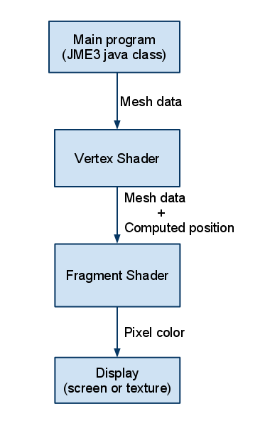
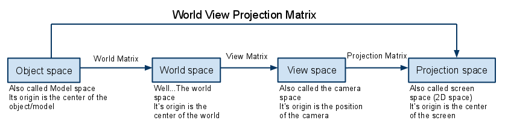

JME3 and Shaders
Shaders Basics
Shaders are sets of instructions that are executed on the GPU. They are used to take advantage of hardware acceleration available on the GPU for rendering purposes.
This paper only covers Vertex and Fragment shaders because they are the only ones supported by JME3 for the moment. Be aware that there are some other types of shaders (geometry, tessellation,…).
There are multiple frequently used languages that you may encounter to code shaders but as JME3 is based on OpenGL, shaders in JME use GLSL and any example in this paper will be written in GLSL.
How Does it work?
To keep it Simple: The Vertex shader is executed once for each vertex in the view, then the Fragment shader (also called the Pixel shader) is executed once for each pixel on the screen.
The main purpose of the Vertex shader is to compute the screen coordinate of a vertex (where this vertex will be displayed on screen) while the main purpose of the Fragment shader is to compute the color of a pixel.
This is a very simplified graphic to describe the call stack:

The main program sends mesh data to the vertex shader (vertex position in object space, normals, tangents, etc..). The vertex shader computes the screen position of the vertex and sends it to the Fragment shader. The fragment shader computes the color, and the result is displayed on screen or in a texture.
Variables scope
There are different types of scope for variables in a shader:
-
uniform: User defined variables that are passed by the main program to the vertex and fragment shader, these variables are global for a given execution of a shader.
-
attribute: Per-vertex variables passed by the engine to the shader, like position, normal, etc (Mesh data in the graphic)
-
varying: Variables passed from the vertex shader to the fragment shader.
There is a large panel of variable types to be used, for more information about it I recommend reading the GLSL specification here.
Spaces and Matrices
To understand the coming example you must know about the different spaces in 3D computer graphics, and the matrices used to translate coordinate from one space to another.

The engine passes the object space coordinates to the vertex shader. We need to compute its position in projection space. To do that we transform the object space position by the WorldViewProjectionMatrix, which is a combination of the World, View, Projection matrices (who would have guessed?).
Simple example: rendering a solid color on an object
Here is the simplest application to shaders, rendering a solid color.
Vertex Shader:
//the global uniform World view projection matrix
//(more on global uniforms below)
uniform mat4 g_WorldViewProjectionMatrix;
//The attribute inPosition is the Object space position of the vertex
attribute vec3 inPosition;
void main(){
//Transformation of the object space coordinate to projection space
//coordinates.
//- gl_Position is the standard GLSL variable holding projection space
//position. It must be filled in the vertex shader
//- To convert position we multiply the worldViewProjectionMatrix by
//by the position vector.
//The multiplication must be done in this order.
gl_Position = g_WorldViewProjectionMatrix * vec4(inPosition, 1.0);
}Fragment Shader :
void main(){
//returning the color of the pixel (here solid blue)
//- gl_FragColor is the standard GLSL variable that holds the pixel
//color. It must be filled in the Fragment Shader.
gl_FragColor = vec4(0.0, 0.0, 1.0, 1.0);
}For example applying this shader to a sphere would render a solid blue sphere on screen.
How to use shaders in JME3
You probably heard that JME3 is “shader oriented”, but what does that mean?
Usually, to use shaders you must create a program. This program specifies the vertex shader and the fragment shader to use. JME3 encloses this in the material system. Every material in JME3 uses shaders.
For example let’s have a look at the SolidColor.j3md file :
MaterialDef Solid Color {
//This is the complete list of user defined uniforms to be used in the
//shaders
MaterialParameters {
Vector4 Color
}
Technique {
//This is where the vertex and fragment shader files are
//specified
VertexShader GLSL100: Common/MatDefs/Misc/SolidColor.vert
FragmentShader GLSL100: Common/MatDefs/Misc/SolidColor.frag
//This is where you specify which global uniform you need for your
//shaders
WorldParameters {
WorldViewProjectionMatrix
}
}
Technique FixedFunc {
}
}For more information on JME3 material system, I suggest you read jMonkeyEngine3 material system - full explanation.
JME3 Global uniforms
JME3 can expose pre-computed global uniforms to your shaders. You must specify the ones that are required for your shader in the WorldParameter’s section of the material definition file (.j3md).
|
In the shader, the uniform names will be prefixed by a “g_”. |
In the example above, WorldViewProjectionMatrix is declared as uniform mat4 g_WorldViewProjectionMatrix in the shader.
The complete list of global uniforms that can be used in JME3 can be found in UniformBinding.java.
JME3 Lighting Global uniforms
JME3 uses some global uniforms for lighting:
-
g_LightDirection (vec4): the direction of the light
-
use for SpotLight: x,y,z contain the world direction vector of the light, the w component contains the spotlight angle cosine
-
-
g_LightColor (vec4): the color of the light
-
g_LightPosition: the position of the light
-
use for SpotLight: x,y,z contain the world position of the light, the w component contains 1/lightRange
-
use for PointLight: x,y,z contain the world position of the light, the w component contains 1/lightRadius
-
use for DirectionalLight: strangely enough it’s used for the direction of the light…this might change though. The fourth component contains -1 and it’s used in the lighting shader to know if it’s a directionalLight or not.
-
-
g_AmbientLightColor: the color of the ambient light.
These uniforms are passed to the shader without having to declare them in the j3md file, but you have to specify in the technique definition “ LightMode MultiPass see lighting.j3md for more information.
JME3 attributes
Those are different attributes that are always passed to your shader.
You can find a complete list of those attribute in the Type enum of the VertexBuffer in VertexBuffer.java.
|
In the shader the attributes names will be prefixed by an “in”. |
When the enumeration lists some usual types for each attribute (for example texCoord specifies two floats) then that is the format expected by all standard JME3 shaders that use that attribute. When writing your own shaders though you can use alternative formats such as placing three floats in texCoord simply by declaring the attribute as vec3 in the shader and passing 3 as the component count into the mesh setBuffer call.
User’s uniforms
At some point when making your own shader you’ll need to pass your own uniforms.
Any uniform has to be declared in the material definition file (.j3md) in the “MaterialParameters section.
MaterialParameters {
Vector4 Color
Texture2D ColorMap
}You can also pass some define to your vertex/fragment programs to know if an uniform as been declared.
You simply add it in the Defines section of your Technique in the definition file.
Defines {
COLORMAP : ColorMap
}For integer and floating point parameters, the define will contain the value that was set.
For all other types of parameters, the value 1 is defined.
If no value is set for that parameter, the define is not declared in the shader.
Those material parameters will be sent from the engine to the shader as follows, there are setXXXX methods for any type of uniform you want to pass.
material.setColor("Color", new ColorRGBA(1.0f, 0.0f, 0.0f, 1.0f)); // red color
material.setTexture("ColorMap", myTexture); // bind myTexture for that sampler uniformTo use this uniform in the shader, you need to declare it in the .frag or .vert files (depending on where you need it). You can make use of the defines here and later in the code: Note that the “m_ prefix specifies that the uniform is a material parameter.
uniform vec4 m_Color;
#ifdef COLORMAP
uniform sampler2D m_ColorMap;
#endifThe uniforms will be populated at runtime with the value you sent.
Example: Adding Color Keying to the Lighting.j3md Material Definition
Color Keying is useful in games involving many players. It consists of adding some player-specific color on models textures. The easiest way of doing this is to use a keyMap which will contain the amount of color to add in its alpha channel.
Here I will use this color map:

to blend color on this texture:

We need to pass 2 new parameters to the Lighting.j3md definition, MaterialParameters section:
// Keying Map
Texture2D KeyMap
// Key Color
Color KeyColorBelow, add a new Define in the main Technique section:
KEYMAP : KeyMapIn the Lighting.frag file, define the new uniforms:
#ifdef KEYMAP
uniform sampler2D m_KeyMap;
uniform vec4 m_KeyColor;
#endifFurther, when obtaining the diffuseColor from the DiffuseMap texture, check if we need to blend it:
#ifdef KEYMAP
vec4 keyColor = texture2D(m_KeyMap, newTexCoord);
diffuseColor.rgb = (1.0-keyColor.a) * diffuseColor.rgb + keyColor.a * m_KeyColor.rgb;
#endifThis way, a transparent pixel in the KeyMap texture doesn’t modify the color. A black pixel replaces it for the m_KeyColor and values in between are blended.
A result preview can be seen here:

Step by step
-
Create a vertex shader (.vert) file
-
Create a fragment shader (.frag) file
-
Create a material definition (j3md) file specifying the user defined uniforms, path to the shaders and the global uniforms to use
-
In your initSimpleApplication, create a material using this definition, apply it to a geometry
-
That’s it!!
// A cube
Box box= new Box(Vector3f.ZERO, 1f,1f,1f);
Geometry cube = new Geometry("box", box);
Material mat = new Material(assetManager,"Path/To/My/materialDef.j3md");
cube.setMaterial(mat);
rootNode.attachChild(cube);JME3 and OpenGL 3 & 4 compatibility
GLSL 1.0 to 1.2 comes with built in attributes and uniforms (ie, gl_Vertex, gl_ModelViewMatrix, etc…). Those attributes are deprecated since GLSL 1.3 (opengl 3), hence JME3 global uniforms and attributes.
Here is a list of deprecated attributes and their equivalent in JME3.
| GLSL 1.2 attributes | JME3 equivalent |
|---|---|
gl_Vertex |
inPosition |
gl_Normal |
inNormal |
gl_Color |
inColor |
gl_MultiTexCoord0 |
inTexCoord |
gl_ModelViewMatrix |
g_WorldViewMatrix |
gl_ProjectionMatrix |
g_ProjectionMatrix |
gl_ModelViewProjectionMatrix |
g_WorldViewProjectionMatrix |
gl_NormalMatrix |
g_NormalMatrix |